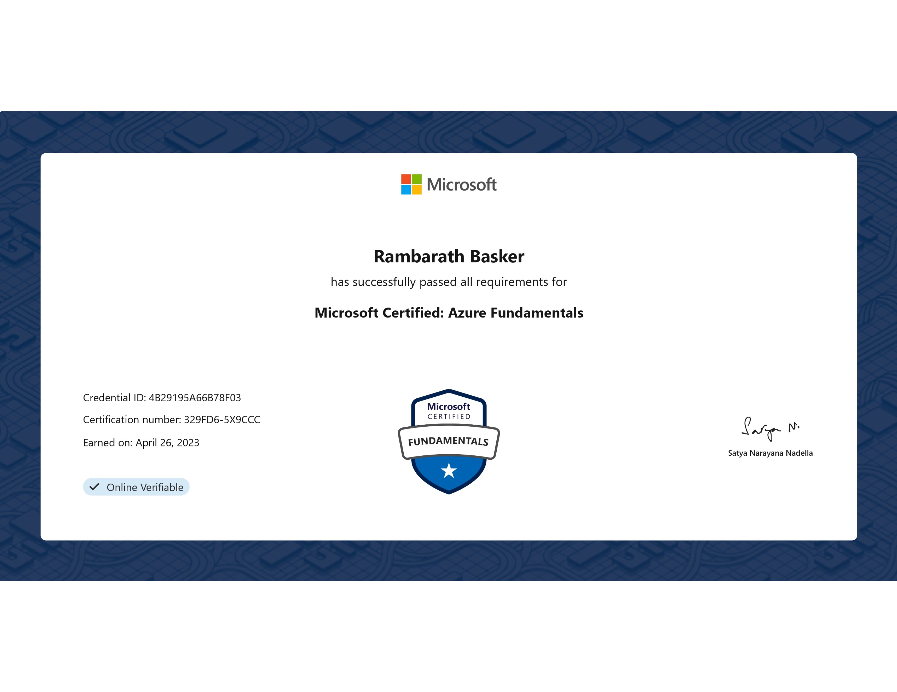

Hi,
I'am RamBarath
CyberSecurity Analyst
Contact me through my socials below

About
Hello, I'm RamBarath
I am a proactive and results-oriented professional with expertise in Security Operations. My track record includes consistently staying one step ahead in risk analysis and process improvement. I excel at providing accurate analytical data that enhances decision-making efficiency. I am eager to leverage my skills in Security Field and collaborate on impactful projects that drive success.
Skills
Cisco WSA Proxy
Mcafee NSM
Splunk
SIEM Monitoring
BCP/DR
RSA Netwitness
ServiceNow(SNOW)
Change Management
Incident Management
Microsoft Excel
Microsoft Word, PPT
VBA Scripting
Secure CRT
Putty
Tenable.io
Nagios
Imperva
Mcafee ePO
Remote Desktop
Cisco ISE
Remote Desktop
IT Audit
IT Process Automation
F5 Pool Management
Zscaler
Zero Trust Exchange
CyberArk
KeePass
Certifications


Work Experience
Cybersecurity Analyst
WIPRO Ltd,
From: June 2021 - To: Present
- I have over 2.3+ years of experience in the cybersecurity field, specializing in working with security-related products.
- Worked as a member of the security operations team, overseeing one of the company's major accounts, USBank.
- Focused primarily on the management of boundary and endpoint security tools.
- Specialized in Cisco WSA proxies, ensuring timely updates based on user incidents and catalog requests.
- Managed change requests for Cisco proxies, implementing daily changes as required.
- Achieved a 100% SLA compliance rate for resolving all incidents, catalog tasks, and changes promptly.
- Handled proxy tenable changes, configuring settings via SecureCRT/Putty, with a fallback plan in case of failure.
- Collaborated with users or teams to resolve issues, utilizing SPLUNK web logs for troubleshooting.
- Analyzed web logs in Splunk, using user IP addresses, error timestamps, and destination URLs to rectify issues.
- Monitored proxy appliance status through Nagios, initiating reboots when necessary.
- Processed user/team requests for URL/IP allow or blocks (blocking restricted to CSIRT Team).
- Conducted monthly audits and clean-ups on the proxy to optimize performance and reduce workload.
- Utilized ServiceNow, tGRC Archer, and the Access Management Portal for change and request management.
- Developed and managed Business Continuity and Disaster Recovery plans to ensure business continuity during disruptions.
- Deployed newly released signatures to the PROD McAfee Network Security Manager.
- Kept the operations team informed about McAfee updates and ensured compliance during audits.
- Scheduled on-demand scans for servers based on pre-approved catalog requests through Tenable.io.
- Monitored silent devices within the SIEM, initiating incident response when critical devices went offline.
- Utilized RSA Netwitness and SPLUNK for Cloud for on-premises and cloud device management.
- Managed all devices within SLAs, ensuring timely incident resolution.
- Periodically monitored ePO Servers and databases following best practices.
- Handled daily McAfee DAT deployments and ensured product compliance.
- Escalated issues to the Engineering team or vendors as needed.
- Managed upper management escalations regarding boundary security products.
- Provided on-call support for high-severity issues during weekends.
- Administered CISCO web proxy devices, allowing specific URL category access based on project requirements.
- Monitored all security devices, including EPO, NSM, Imperva, and CISCO proxies.
- Ranked 1st out of 16 colleagues for Incident, Task, and Change closure in 4 out of 8 Quarters.
- Developed process automation tools using Selenium and VBA Scripts to streamline repetitive tasks and reporting processes.
- Identified process improvement opportunities to enhance operational effectiveness and team productivity.
- Communicated and built rapport with diverse teams, facilitating process automation and refinement for better collaboration.
Contact
Phone : +91 7010384345
Email : rambarath@outlook.com